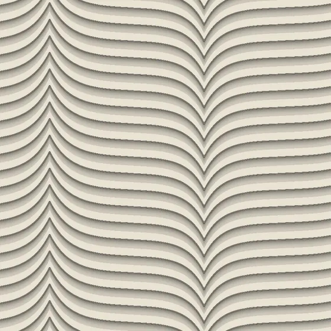
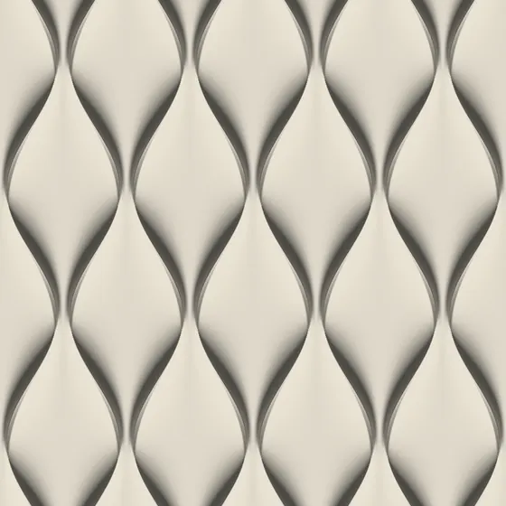
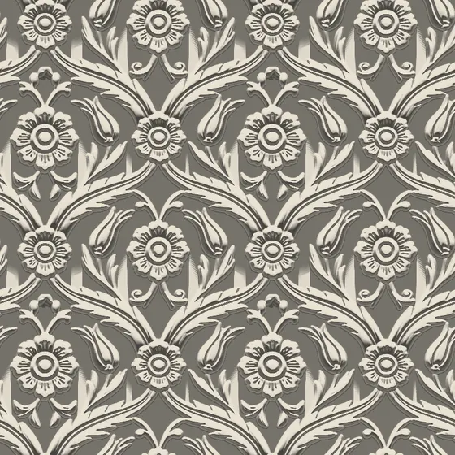
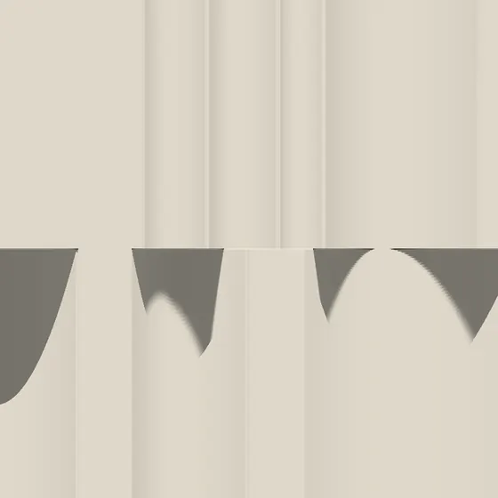
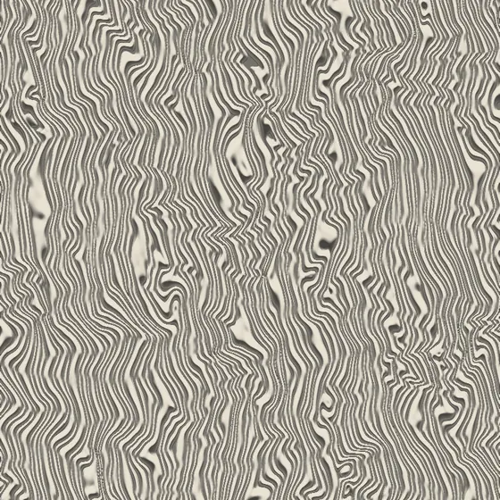
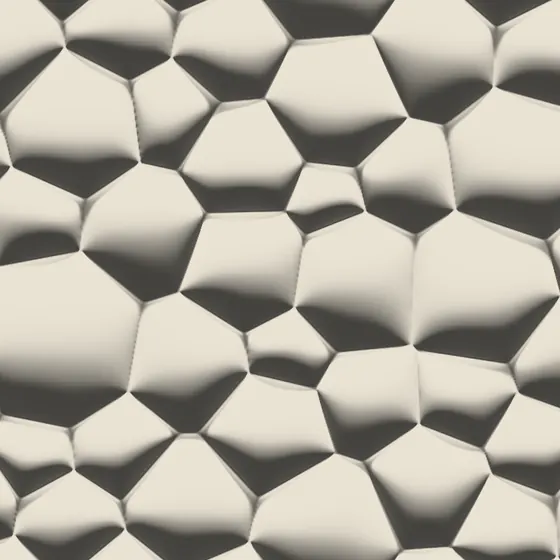

One light, six designs.
Move the light. Side by side, you can see which design sharpens under which light and which one goes flat.
-

Andante7 mm -

Antiphon15 mm -

Fioritura16 mm -

Fugato40 mm -

Glissando14 mm -

Mezzavoce18 mm
Calculated light, not photographs
Each square shows the same 600 × 600 mm of surface, at one scale. Your browser works the image out live from the design’s own height data, so the shadows redraw as the light moves. The figure beside each name is the relief depth.
Try the set-back spot: Mezzavoce drops to a third of its contrast while Andante holds. Fugato, the deepest design here, wants its light from the side: a ceiling wash leaves it quiet, a side window brings it up.
The calculation assumes one matte tone. An artisan finish and the other light in a room will change what you see.
Trial tool: measures frame rate and data load and writes the result here.